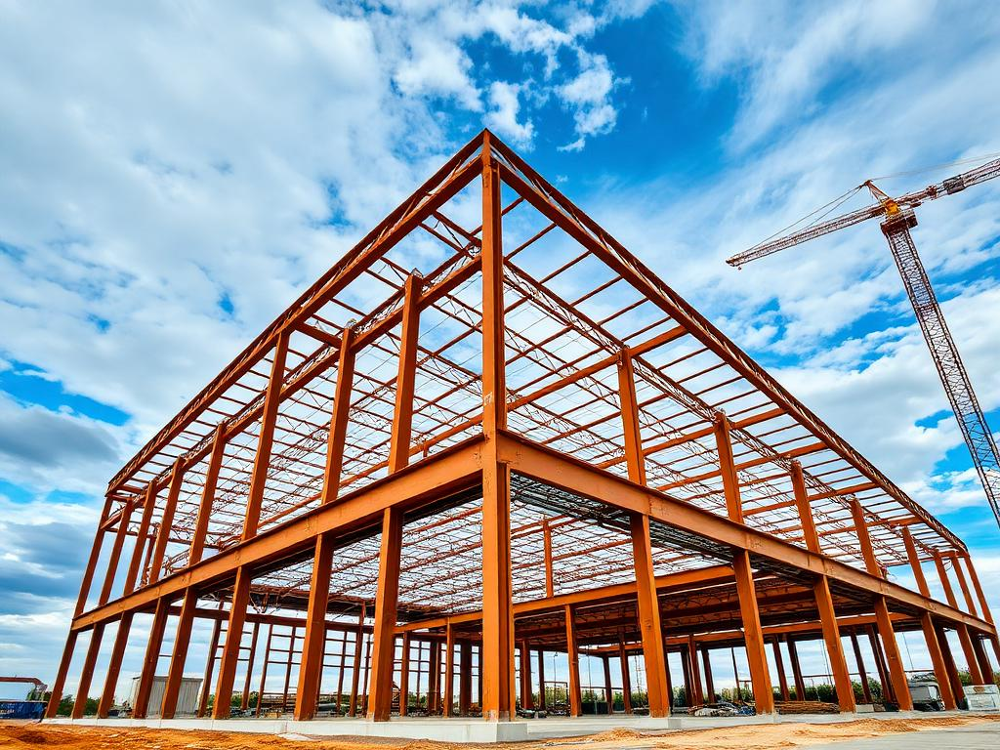
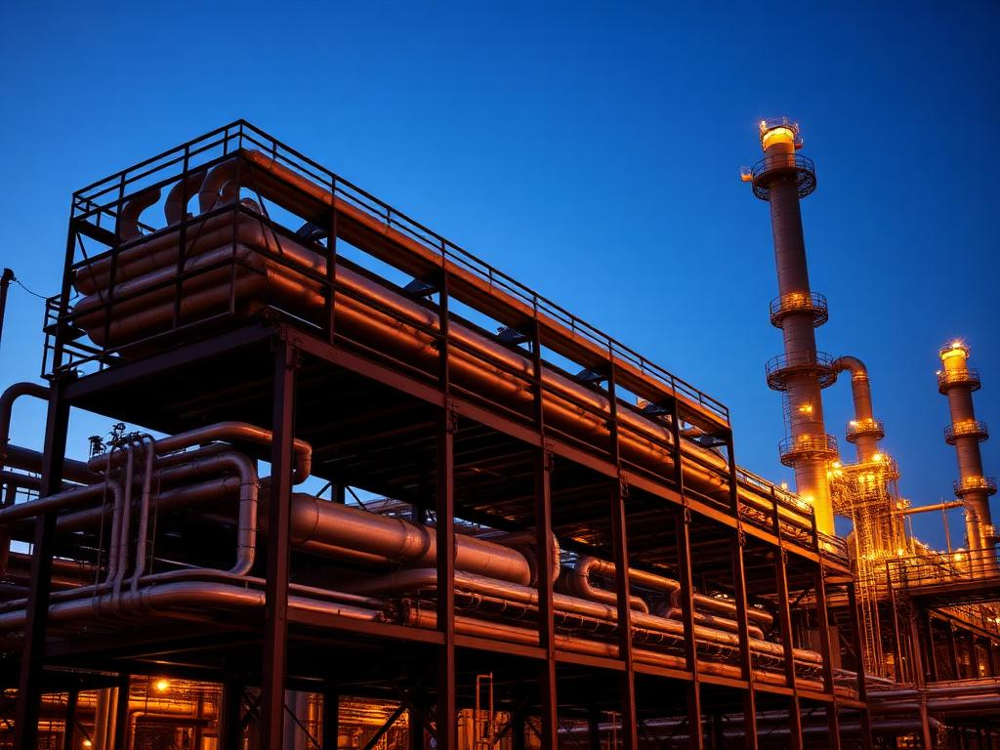
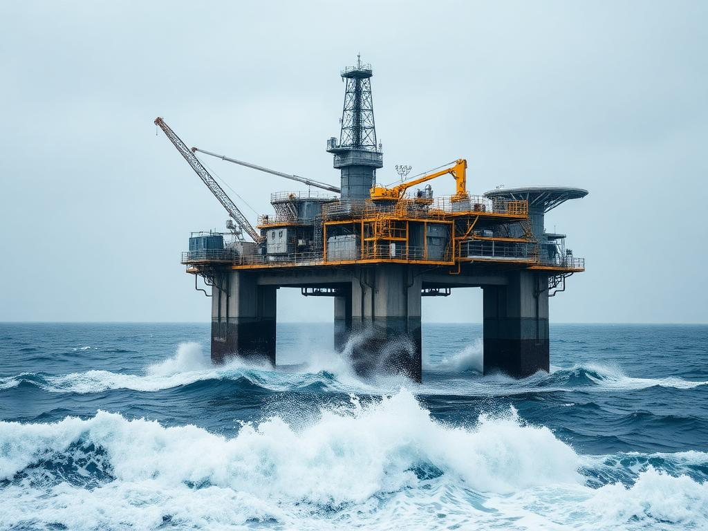
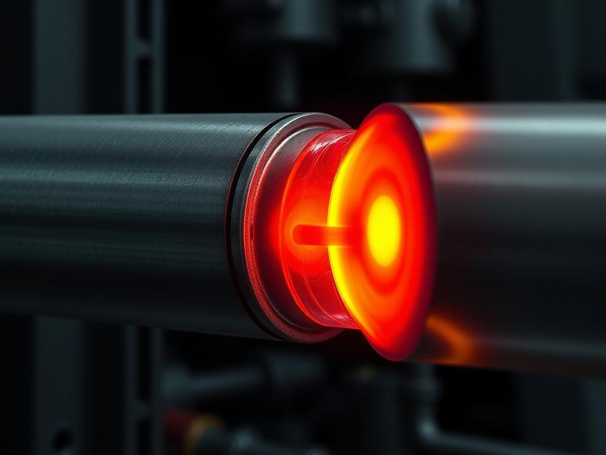
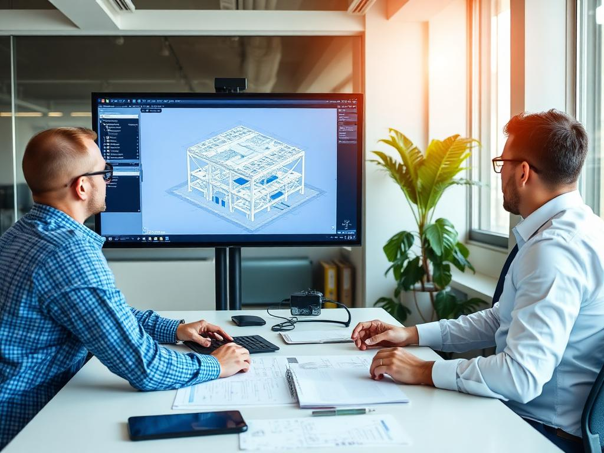
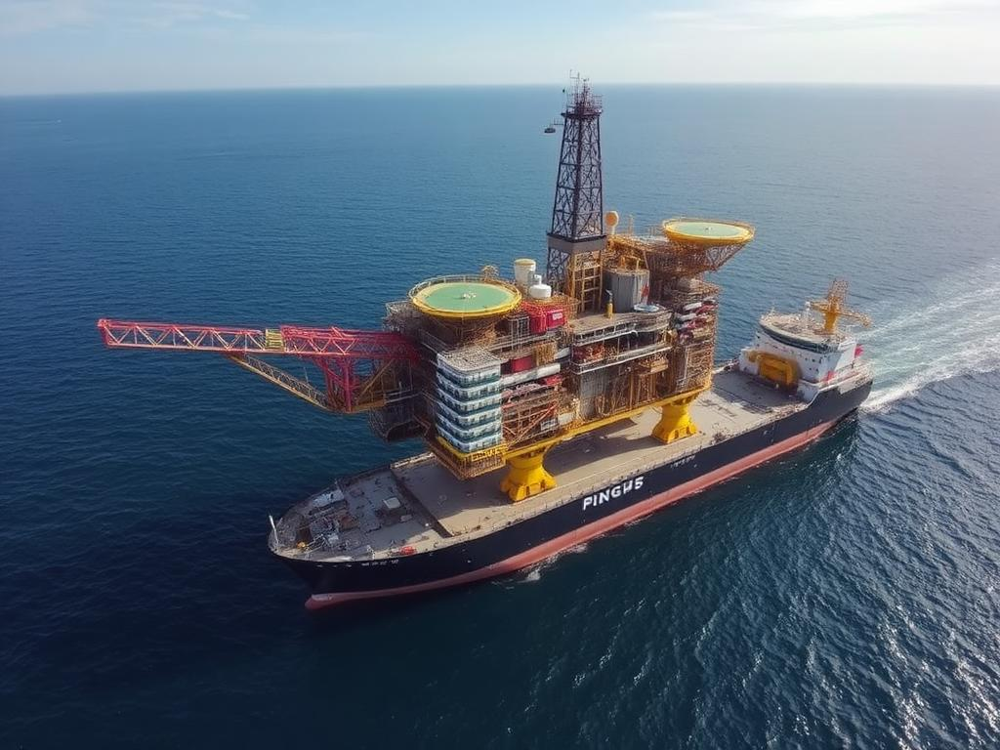

Warehouse & Industrial Structures
AISC 360 · ASCE 7 · IBC
Industrial & Petrochemical Facilities
AISC 360 · ASCE 7
Compact Structural Packages
AISC · ASME
Industrial Platforms, Mezzanines, Supports
AISC · ASCE · IBC
Comprehensive design, analysis & engineering per API, AISC, ASCE, DNV & ISO codes


Concept layout, load definitions, codes selection
Static & dynamic analysis under operating & environmental loads
Spectral & deterministic fatigue analysis of tubular joints
Sling loads, rigging analysis per API / DNV
Sea-fastening, motion analysis, tie-down forces
Skid / roll / float-off loadout analyses
Jacket launch simulation, flooding analysis
Mudmat bearing, stability, pile driving assessment
Initial platform configuration, load definition, code framework selection, and preliminary member sizing. Establishing the structural DNA of the project.

Full structural verification under operating, storm, and extreme environmental conditions. Wave, current, and wind load application with pushover analysis for reserve strength assessment.
Spectral fatigue analysis using site-specific wave scatter data. SCF calculations per Efthymiou, joint classification, and S-N curve selection with inspection planning recommendations.
Barge transport analysis including sea-fastening, motion response, and seafastener design. Jacket launch trajectory, upending, and on-bottom stability verification.
